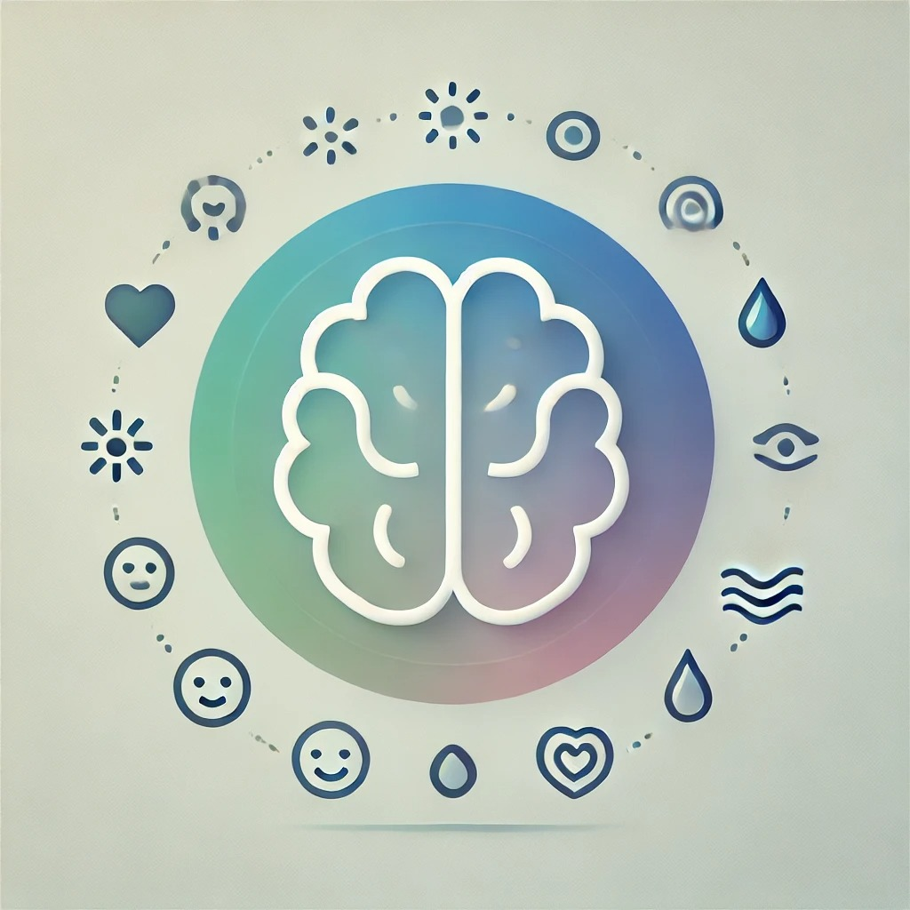

TipBrain

Somos un equipo dedicado a promover la inteligencia emocional y la salud mental, ayudando a las personas a desarrollar
habilidades esenciales como la gestión emocional, la comunicación asertiva y la resolución de conflictos. Trabajamos con
pasión para crear programas innovadores, brindar apoyo profesional y fomentar entornos positivos que impulsen el bienestar y el crecimiento personal.